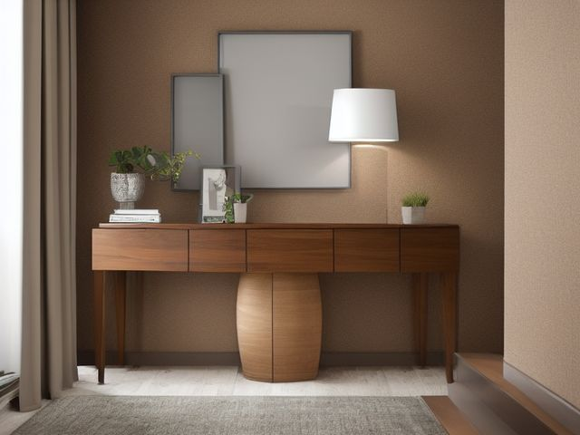

Stair Landing micro zone
The Landing Surface or Console
A small surface beside the stairs that holds a lamp and a landing spot, without becoming the house's holding pen for things headed to another floor.
One session: 15-30 min. most of it in Sort, deciding where the deferred items actually live

What done looks like
Three permanent things on the console top, say a lamp, a framed photo and one tray, with the tray holding nothing that was there yesterday. The lamp cord runs down the back leg in a clip, not across the walking side. One stair basket sits on the floor at the end nearest the top step, and it is empty.
Check these before you start
- FallAnything set near the stair-side edge of the console, a book, a phone, a set of keys, can be caught by a passing sleeve and knocked onto the top tread, where it waits in the dark.
- Fall, cut, or crushA glass vase or ceramic bowl on a console beside an open stairwell falls further than furniture height. It breaks across treads that people walk in socks.
The six passes, in order
Work them in this order. Sorting after you have arranged things means arranging things you were about to remove.
Sort
Decide what stays. Everything else leaves the zone now.
Take everything off the console top and out of its drawer in one sweep. Sort into three: things that genuinely live on this floor, things headed up or down (straight into the stair basket now), and the drift a landing collects, loose screws, dry pens, keys to nothing, mail you already read.
Straighten
Give what stays a home, placed where the hand actually reaches.
Put the tray at the end of the console nearest the top step, where your hand lands as you turn, not at the decorative centre. Clip the lamp cord to the back leg so it never crosses the side people walk.
Shine
Clean it, and use the cleaning to inspect what you cannot see when it is full.
Wipe the console top, the front edge where hips and bags push past, and the top rim of the lamp shade, which catches the dust the stairwell draught keeps lifting. Then press one corner of the console: if it rocks, shim it now, because a wobble beside an open stairwell is how a lamp goes over the edge.
Safety
Make the zone safe for everybody who uses it, including the shortest person.
Nothing on this surface may overhang the stair side, not by a centimetre. A book with its spine past the edge ends up on a tread, and a tread with a book on it is how people fall down stairs at night.
Standardize
Write down the best way you know today, so it survives you forgetting.
Write the count into the surface itself: three permanent items plus one tray on top, and one basket on the floor. Photograph the console in that state and tape the photo inside the console drawer, where the next person to open it will see it.
Sustain
Attach the reset to something that already happens, so it keeps itself.
Whoever switches off the landing light at night carries the stair basket up or down and brings it back empty. The light switch is the trigger, so the basket never sleeps loaded.
The going-upstairs-anyway pile
Every landing has one: the small heap of things that belong on the other floor, waiting for a trip that would have happened anyway. The honest question you have been avoiding is whether that heap gets a container or gets banned outright. Give it a container, exactly one basket, and then enforce the part that hurts, which is that it empties nightly whether it is full or not. Here is the rule that settles the rest. If an item rides that basket three nights running without landing anywhere, it is not waiting for a trip, it has no home on the destination floor. Stop carrying it back and forth, and either give it a home tonight or route it out of the house.
Cleaning it properly
Work top to bottom: the lamp and its shade, the framed photo, the tray, the drawer, then the console top and the floor beneath it. The thing people miss is the front edge, where every hip and bag drags a film past all day.
Inspect as you clean. Cleaning is the only time you see the zone empty, so use it.
- As you lift the lamp, look along the whole run of the cord for a cracked, frayed, or pinched section, and check whether the clip is still gripping or hanging loose.
- When you press the top to wipe the front edge, notice any rock or give in a leg or joint and flag it, rather than quietly working around a wobble beside an open stairwell.
- A pale ring or a damp patch under the tray means a glass or a wet brolly has been living there. Note it so you can trace where the water keeps coming from.
- Check the framed glass, and any vase or bowl on the top, for a hairline crack while it is in your hands.
- Look at the shade lining and around the bulb for a brown scorch or heat mark that says the bulb is running too hot for the fitting.
The standard that keeps it fixed
Three permanent items plus one tray on top, nothing overhanging the stair side, and one stair basket that sleeps empty.
Reset trigger. When you switch off the landing light at night, the basket goes with you.
Next in this room
- The Wall and Display Zone, the zone after this one
- All 3 micro zones in the Stair Landing
Related reading
- What is 6S?
- This zone's safety pass, in full
- Is one spot in this zone always the one you skip?
- Why this zone gets messy again
- Decluttering vs. organizing
- Before you buy storage for this zone
- Still does not fit, even after the honest count?
- Does something in this zone actually get used somewhere else?
- Stuck on one item in this zone?
- Written the standard, but nobody else follows it?
- Does everyone in the house agree what "done" looks like here?
- Does more than one person use this zone?
- Found a duplicate of something in this zone?
- Why the standard above names one home per category
- Is the everyday item in this zone actually the easy one to reach?
- Not sure whether to keep something in this zone?
- Does this zone keep running out of something?
- Started this zone and stalled partway through?
When you want it off the screen
Carry The Landing Surface or Console into the room
The method above is complete and free. The Whole House Print Pack puts The Landing Surface or Console and the other 113 micro zones on 684 printable cards, so the steps you just read are not stuck behind a phone screen while your hands are full.
The Print Pack, 19 dollarsJust this zone, 4 dollarsOr draw a card free
The Landing Surface or Console on its own is 4 dollars for 6 cards. All 114 micro zones is 19 dollars for 684. The whole house is the better buy; the single zone is here so you can take only what you are working on.
If The Landing Surface or Console keeps fighting back, the real problem usually sits somewhere else in the room. A one hour virtual consult is 250 dollars: we find the function, the friction and the root cause together, and you keep a written standard for the space. See what a consult covers.